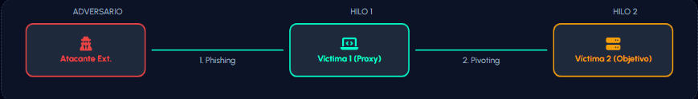

Actividad 18
Análisis de Intrusiones con el Modelo Diamante
| Institución | Universidad Politécnica de San Luis Potosí (UPSLP) |
|---|---|
Parte 01 — Comprensión del Modelo
| Elemento | Descripción | Ejemplo Práctico |
|---|---|---|
| Adversario | El actor o grupo responsable de llevar a cabo el ataque. | Un grupo de ciberdelincuencia o una APT (Amenaza Persistente Avanzada). |
| Capacidad | Herramientas, técnicas, software o conocimientos utilizados por el atacante. | Un malware tipo troyano (RAT) o un exploit de día cero. |
| Infraestructura | Los recursos físicos o lógicos que permiten la comunicación entre el adversario y la víctima. | Direcciones IP, servidores de Comando y Control (C2) o nombres de dominio. |
| Víctima | El objetivo del ataque, que puede ser una persona, un dispositivo o una organización entera. | El servidor de base de datos de una institución financiera o el equipo de un administrador. |
Parte 02 — Análisis de Evento (Modelo Diamante)
Escenario:
Una organización detecta comportamiento anómalo en un equipo. El análisis revela:
- La víctima detecta malware.
- El malware contiene dominios de Comando y Control (C2).
- Los dominios resuelven a direcciones IP externas.
- Logs muestran múltiples hosts conectándose a esas IP.
- WHOIS/IP revela posible origen del atacante.
📊 Metacaracterísticas del Evento
Marca de tiempo: Momento exacto de la detección del comportamiento anómalo en el equipo.
Fase: Comando y Control (C2) / Instalación (según la etapa del ataque detectada).
Resultado: Éxito (el malware logró establecer contacto con infraestructura externa).
Dirección: De la red interna (Víctima) hacia la red externa (Infraestructura del Atacante).
Metodología: Comunicación mediante dominios C2 específicos integrados en el código del malware.
Recursos: Dominios de C2, direcciones IP externas identificadas y binarios de malware.
Preguntas clave del análisis
¿Quién es el adversario? El actor identificado a través de la investigación de WHOIS/IP.
¿Cuál es la capacidad utilizada? Malware con funciones de conexión remota a centros de mando.
¿Qué tipo de infraestructura se emplea? Dominios de Comando y Control (C2) y servidores externos con IP públicas.
¿Quién es la víctima primaria? El host inicial donde se detectó la presencia del malware.
¿Existe evidencia de movimiento lateral? Sí, ya que los logs muestran que múltiples hosts se conectan a esas mismas IPs externas sospechosas.
Parte 03 — Relación con la Kill Chain
| Evento | Fase Kill Chain |
|---|---|
| Envío de phishing | Distribución (Delivery) |
| Ejecución del malware | Explotación / Instalación |
| Conexión a C2 | Comando y Control (C2) |
| Detección de malware | Acciones sobre objetivos (etapa de post-compromiso) |
Parte 04 — Hilos de Actividad
Con base en el siguiente escenario tipo APT:
- Phishing dirigido a administrador.
- Ejecución de malware.
- Conexión a C2.
- Uso del host comprometido como proxy.
- Ataque a segunda víctima.
Inicia con un ataque de Phishing dirigido a un administrador, quien ejecuta el malware. El sistema establece exitosamente una conexión al C2.
Representa el objetivo interno subsiguiente del atacante una vez que ya tiene control dentro de la organización.
El atacante utiliza el host comprometido (Víctima 1) como un proxy. Esto le permite ocultar su origen real y utilizar la confianza de la red interna para lanzar un ataque contra la segunda víctima, evadiendo controles perimetrales.

| Hilo 1 + Relación El administrador ejecuta el malware. Se crea un túnel (Proxy) que permite al atacante "saltar" desde fuera hacia dentro de la red confiable. | Hilo 2 — Impacto Ataque exitoso a la segunda víctima ocultando el origen del atacante, evadiendo los Firewalls perimetrales que ya confían en la Víctima 1. |
|---|